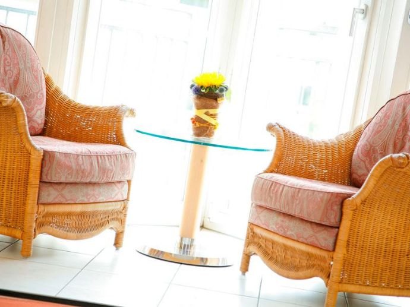

1,5 Schlafzimmer Wohnung in Dortmund, Am Bruchheck 20 44263 Dortmund, Deutschland
70 m2
Haustiere erlaubt
Kein Kellerraum
Kaltmeite - 700 Euro
Nebenkosten - 130 Euro
Kaution - 1400 Euro
Die Immobilien
Die Küche hat ist einbau, und hat einen hochwertig Ofen und viele Schränke. Man könnte viel Essen backen und kochen. Auch hat sie eine Mikrowelle.
Im Badezimmer kann man eine Dusche und eine Bade sehen. Die Wohnung hat eine Komplett Badezimmer und auch eine Toilette.

Geschäft:
Bäckerei und Metzgerei: Bäcker Beckmann, 137 meters
Alte Benninghofer Str. 29, 44263 Dortmund
Man koennte Brot und Brötchen kaufen.
Restaurants: American Dinner + Tapas Jedermanns (same building), Am Bruchheck 30 ~50 meters
American Dinner hat Essen aus den USA. Es ist billig. Tapas Jedermanns hat Essen aus Spanien. Es is teurer als American Dinner.
Fitness Möglichkeiten: Goystadion hat viele Fußballplätze. Auch könnte man laufen.
Einkaufen: Kiosk Kandeepan ~ 200 meters, Schlickeisen Antique-Shop (same building)
Man könnte Süßigkeiten und Antiques kaufen.
Aktivitäten: Goystadion hat andere Aktivitäten. Man koennte Natur sehen.
Natur: Botanischer Garten Rombergpark hat Pflanzen